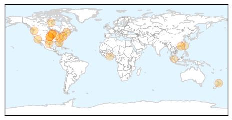
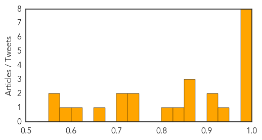
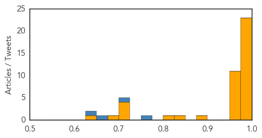

Influenza
30-Day Web Trend
4 alerts, 0 warnings

30-Day Twitter Trend
3 alerts, 0 warnings

Article Locations
Article Confidences
Top Articles:
- 0.996
- Health Department offers flu shots, tips on staying healthy
- 0.996
- Flu Shot?
- 0.996
- Flu Season 2015 — Getting The Influenza Jab Could Save Your Life
- 0.994
- Free influenza vaccines to become available Oct. 1: CDC
- 0.986
- Nearly half of U.S. population make annual flu vaccination routine, health officials call on all to get vaccinated
- 0.985
- The 2015 Flu Vaccine May Be A Lot Better Than Previous Versions, But Are Americans Accepting It?
- 0.976
- FLU SHOTS: Reformulated vaccine will be more potent, officials say
- 0.976
- Better Than Last Year's, CDC Doctors Promise
- 0.944
- Health Officials Urge Iowans To Get Flu Immunization
- 0.917
- Health Officials Urge North Carolinians To Prepare For Flu Season With Better Vaccine
- 0.902
- Alberta aims for 40% immunization rate this flu season
- 0.859
- Canterbury first in flu vaccine but numbers still low
- 0.858
- Flu shots available
- 0.854
- Canterbury tops in flu jab
- 0.826
- Free influenza vaccines to become available Oct. 1: CDC
- 0.821
- Clearing up Flu Misconceptions ahead of Season
- 0.744
- Wild birds affected by bird flu first time in Ghana
- 0.739
- Inland Bays, Atlantic Ocean, Rehoboth Beach, Lewes, Milton, Dewey Beach, USA
- 0.724
- NZ authorities proved Kiwi horses were not behind Malaysia's equine flu
- 0.715
- Don't Wait For Newest Flu Vaccines To Get Vaccinated, Say Doctors
- 0.673
- Under the Microscope - Officials, Farmers Prepare for Fall Bird Flu Outbreak Amid Ongoing Mystery
- 0.605
- Ames company gets USDA approval for bird flu vaccine
- 0.594
- KTIC Radio
- 0.568
- Inland Bays, Atlantic Ocean, Rehoboth Beach, Lewes, Milton, Dewey Beach, USA
- 0.560
- Poultry Barns In The US To Use Heat In Response To Bird Flu
Top Tweets:
-
No tweets found for Sep 21, 2015
Ebola
30-Day Web Trend
0 alerts, 0 warnings

30-Day Twitter Trend
0 alerts, 0 warnings

Article Locations

Article Confidences
Top Articles:
- 0.998
- UK Pledges $202 Million to Help Affected African Countries
- 0.996
- AP Investigation: Bungling by UN agency hurt Ebola response
- 0.995
- AP Investigation: Bungling by UN agency hurt Ebola response
- 0.995
- AP Investigation: Bungling by UN agency hurt Ebola response
- 0.994
- Enhanced Airport Entry Screening to End for Travelers from Liberia to the United States
- 0.993
- AP Investigation: Bungling by UN agency hurt Ebola response
- 0.993
- AP Investigation: WHO Ebola effort faltered in African city
- 0.992
- AP Investigation: Bungling by UN agency hurt Ebola response
- 0.992
- AP Investigation: Bungling by UN agency hurt Ebola response
- 0.990
- Enhanced airport screening to end for travelers from Liberia to U.S.
- 0.990
- Mishandling by WHO hurt Ebola response: AP
- 0.989
- AP Investigation: WHO Ebola effort faltered in African city
- 0.989
- AP Investigation: Bungling by UN agency hurt Ebola response
- 0.989
- The Courier AP Investigation: Bungling by UN agency hurt Ebola response
- 0.988
- AP Investigation: WHO Ebola effort faltered in African city - MyNorthwest
- 0.988
- AP Investigation: WHO Ebola effort faltered in African city - MyNorthwest
- 0.987
- Bungling by UN agency hurt Ebola response
- 0.986
- Bungling by UN agency hurt Ebola response
- 0.983
- AP Investigation: Bungling by U.N. agency hurt Ebola response
- 0.981
- AP Investigation: Bungling by WHO Hurt Ebola Response
- 0.980
- Bungling by UN agency hurt Ebola response
- 0.979
- Virus
- 0.977
- 10 critical mistakes in last year's Ebola outbreak
- 0.970
- Bungling by UN agency hurt Ebola response: AP Investigation
- 0.969
- Bungling by UN agency hurt Ebola response
- 0.967
- 10 critical mistakes in last year's Ebola outbreak
- 0.963
- AP Investigation: Bungling by UN agency hurt Ebola response
- 0.963
- Ebola outbreak mistakes
- 0.962
- Bungling by UN agency hurt Ebola response
- 0.960
- AP Investigation: Bungling by UN agency hurt Ebola response
- 0.959
- AP Investigation: World Health agency's bungling hindered Ebola response in Sierra Leone
- 0.958
- AP Investigation: Bungling by UN agency hurt Ebola response
- 0.958
- AP Investigation: Bungling by UN agency hurt Ebola response
- 0.954
- Bungling by World Health Organization Hurt Ebola Response, AP Investigation Reveals
- 0.890
- Ebola screening for Nigeria's Mecca pilgrims
- 0.836
- AP Investigation: WHO’s bungling hurt Ebola response in Sierra
- 0.814
- Health Promotion directorate sensitises 40 district chiefs on Ebola
- 0.723
- Health is key to growth
- 0.720
- World Health agency's bungling hindered Ebola response in Sierra Leone
- 0.718
- GW Launches Health Workforce Research and Policy Institute
- 0.717
- Today’s NewsStand (September 21, 2015)
- 0.676
- World Bank Hails Sierra Leone’s Ebola Fight
- 0.641
- Orphans’ Future in Limbo
Top Tweets:
- 0.755
- 10 critical mistakes in 2014's Ebola outbreak - Al-Arabiya http://t.co/L7yi4ZmBVe ebola EVD
- 0.715
- Guinea's Government Expects an End to Ebola Epidemic by November - Bloomberg http://t.co/Slz1aNfHhO ebola EVD
- 0.651
- How bureaucracy bungling hurt Ebola response - CBS News http://t.co/jhpOv6wiA0 ebola EVD
- 0.647
- 10 critical mistakes in last year's Ebola outbreak - Washington Post http://t.co/KmfTkfcdk9 ebola EVD